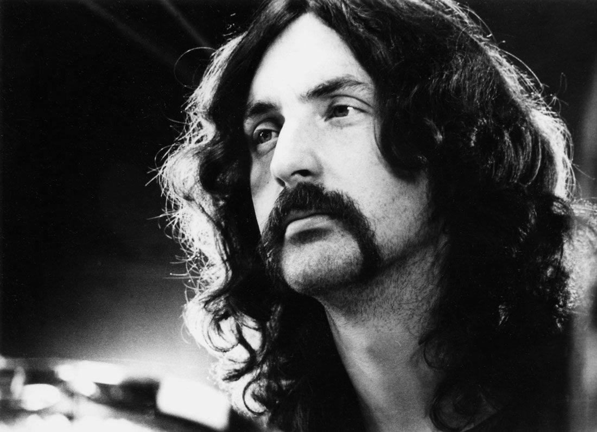
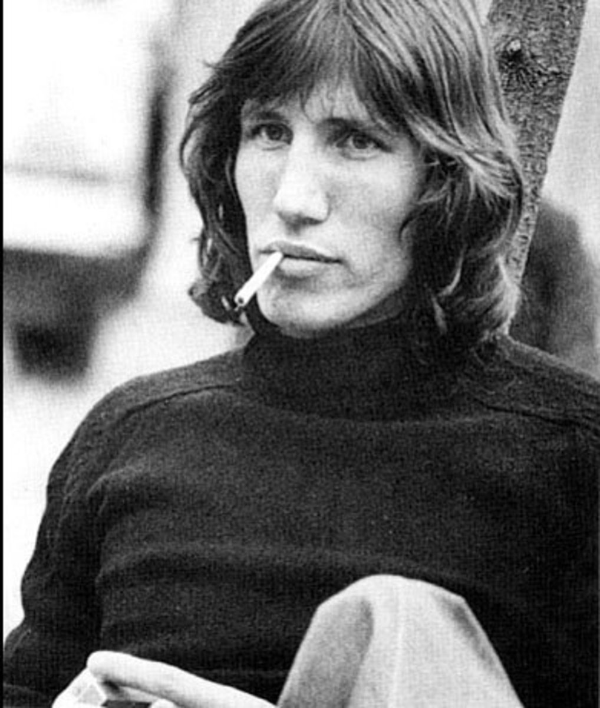
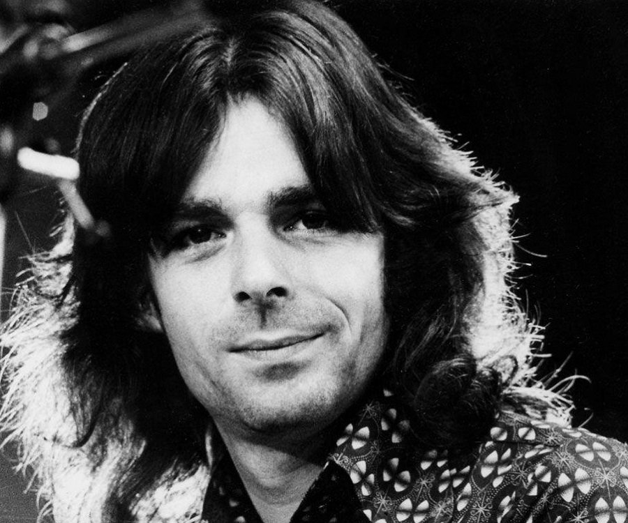
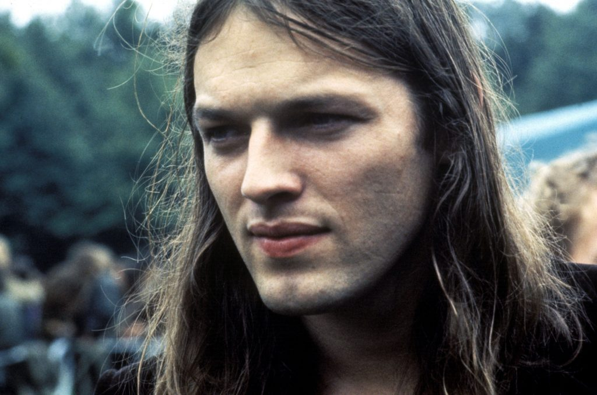

Сид Барретт — соло и ритм-гитара, вокал (1965—1968; умер в 2006)

Ник Мейсон — ударные, перкуссия (1965—1995, 2005, 2013—2015)

Роджер Уотерс — бас-гитара, вокал, ритм-гитара (1965—1985, 2005)

Ричард Райт — клавишные, вокал (1965—1979, 1990—1995, 2005; умер в 2008)(концертный/сессионный участник в 1979—1981 и в 1986—1990)

Дэвид Гилмор — соло и ритм гитара, вокал, бас-гитара, клавишные (1967—1995, 2005, 2013—2015)